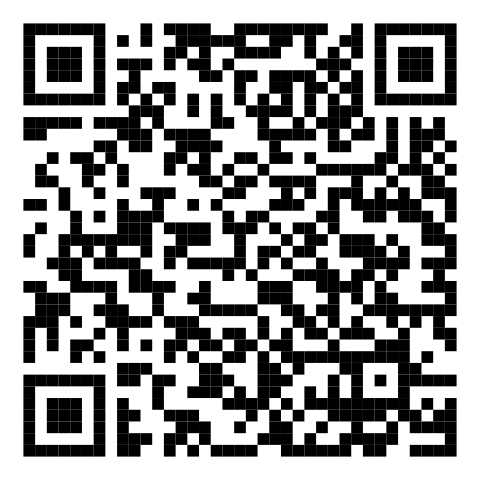
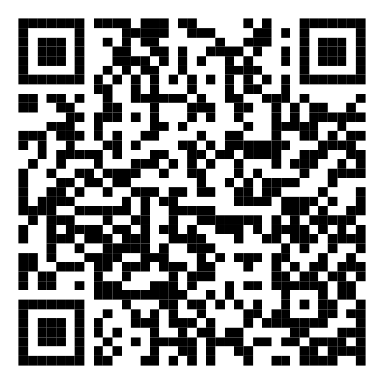

Open this page on a screen or print it, then use Scan QR label on the Register a product form (dealer) or Scan the QR label (customer). Each code carries the serial, model and batch number. For a phone-camera scan that opens your own server, print the label from the product page instead.

261804517 · batch 2618-L02 SM482V SMAN Wireless 4-Port Digital Manifold Seeded product shipped to Lone Star, not registered yet (W2)

263899931 · batch 2638-L01 SC680 Swivel Head Wireless Clamp Meter New product